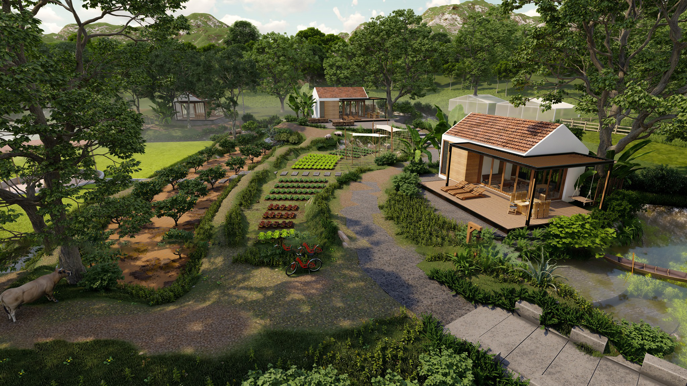
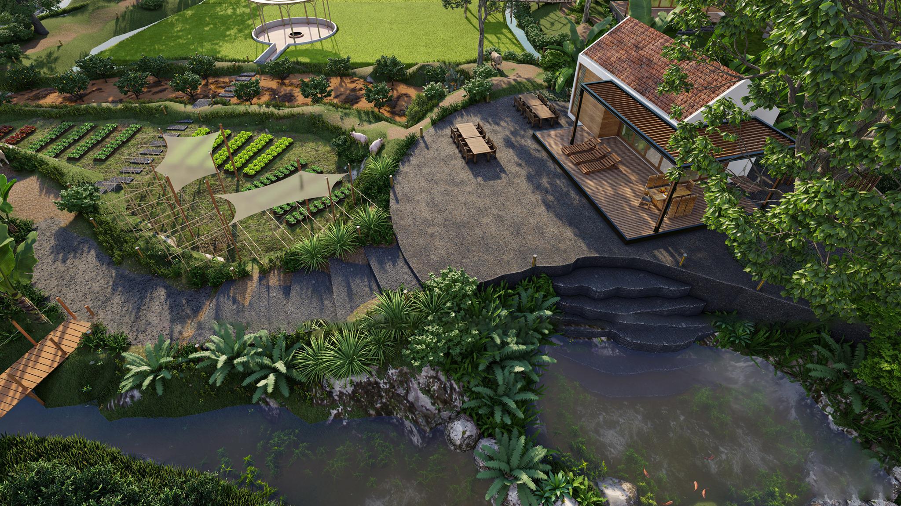
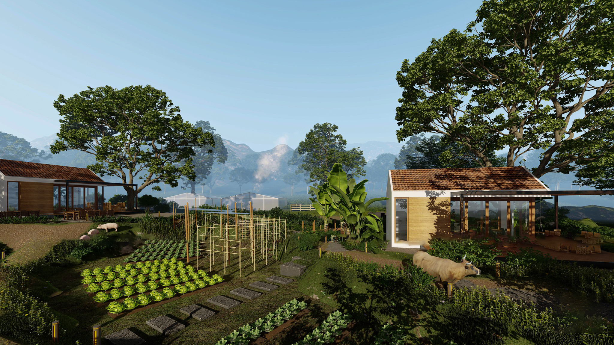
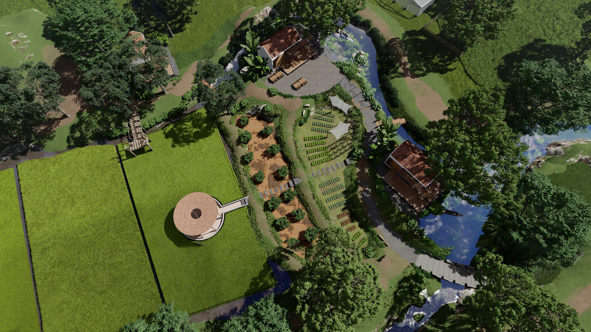
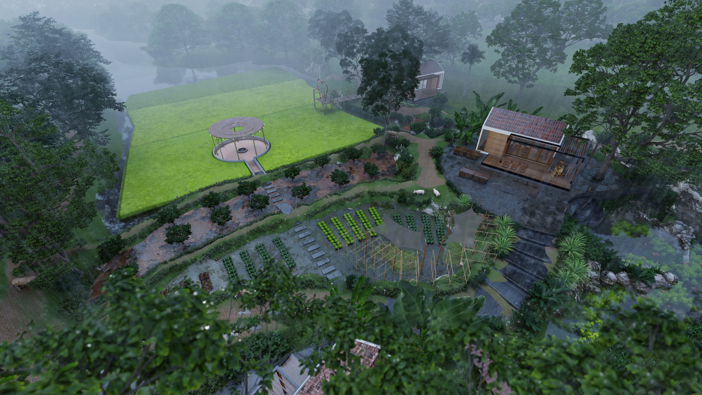
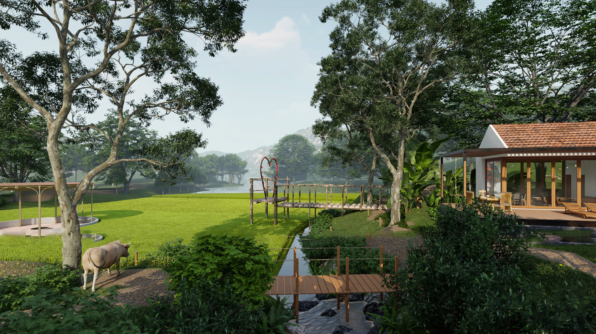
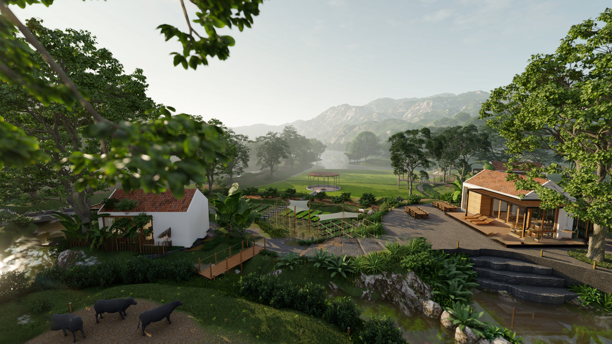
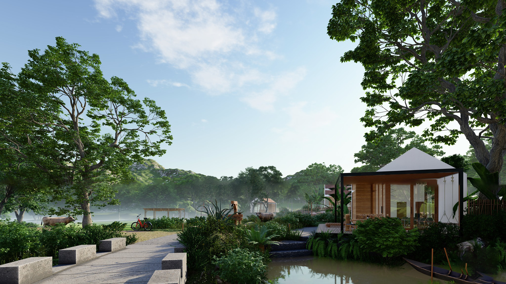
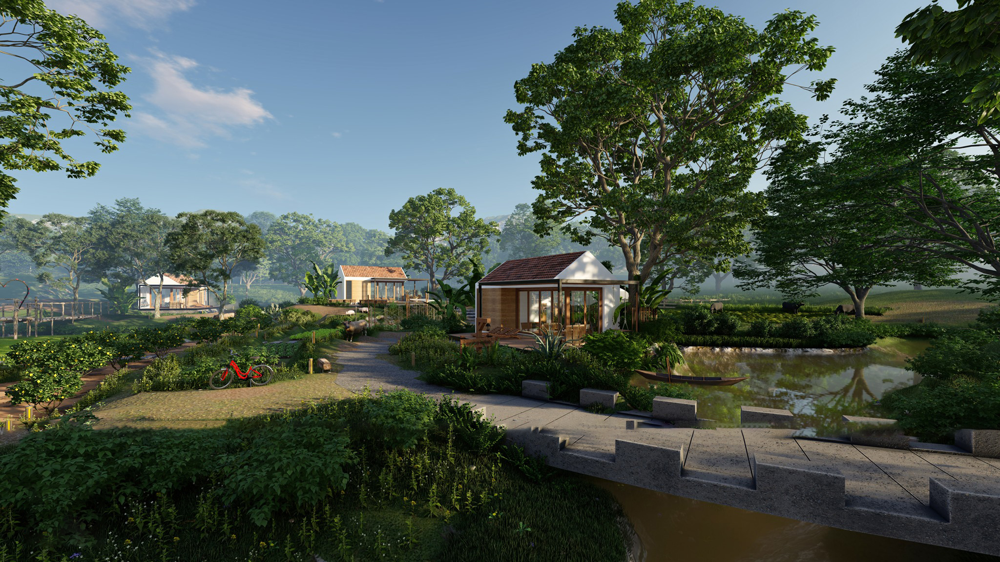
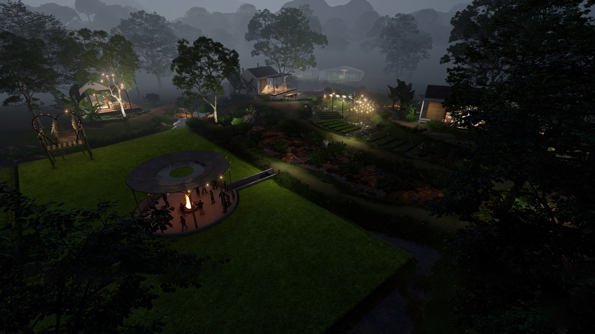

1. Farmstay là gì?
Farmstay là sự kết hợp giữa “Farm” - Nông trại và “Homestay” - khu lưu trú. Chính là mô hình kinh doanh du lịch nghỉ dưỡng nông trại, giúp du khách tận hưởng và hòa mình vào thiên nhiên trong lành, trải nghiệm mọi cảm giác như cuộc sống của một người nông dân thực thụ như trồng trọt, chăn nuôi và thu hoạch, thưởng thức những món ăn từ nông sản do chính mình tạo ra.

Sự kết hợp của mô hình Farmstay hiện đã và đang dần trở thành xu hướng được đón nhận và phát triển trong ngành du lịch Việt Nam. Tuy nhiên, để xây dựng nên một Farmstay đúng “chất” và thu hút khách sẽ là một ý tưởng không hề dễ dàng.

Vậy khi lên ý tưởng thiết kế và xây dựng Farmstay chúng ta cần lưu ý những điểm nào, hãy cùng Nhiệt Đới tìm hiểu ngay sau đây nhé.
2. Những lưu ý khi thiết kế và xây dựng mô hình Farmstay
2.1. Vị trí xây dựng Farmstay
Mô hình Farmstay để thu hút và thực sự mang đến hiệu quả du lịch cao thì vị trí thường được lựa chọn ở những khu vực có diện tích rộng lớn, như ở vùng quê hoặc ngoại ô thành phố. Sở hữu cảnh quan thiên nhiên trong lành, mang đến những trải nghiệm nghỉ dưỡng đích thực về một vùng quê yên tĩnh.

Chủ đầu tư thường là chủ nhân sở hữu hoặc sẽ mua lại đầu tư vào một nông trại, tận dụng những tiền năng vốn có hoặc xây dựng và cải tạo lại thành mô hình Farmstay đúng chuẩn.

Vì vậy, khi tiếp nhận thiết kế và thi công Farmstay, Nhiệt Đới luôn lắng nghe những ý kiến, yêu cầu của Khách hàng sau đó lên ý tưởng và đưa ra những đề xuất phù hợp nhất với tiêu chí của Khách hàng, đảm bảo mô hình Farmstay phù hợp nhất với vị trí xây dựng, tạo nên một không gian lý tưởng và thu hút nhất.

2.2. Thiết kế kiến trúc và nội thất của Farmstay
Farmstay luôn hướng đến mục tiêu gần gũi với thiên nhiên, nên kiến trúc thường mang phong cách giản đơn, bình dị, hoặc mang đậm bản sắc vùng miền.

Bên cạnh đó, kiến trúc Farmstay cũng phải đảm bảo các yếu tố về địa hình, khí hậu cũng như nét văn hóa để sử dụng phong cách, vật liệu, màu sắc,... phù hợp. Không chỉ đảm bảo nét hài hòa mà còn chú trọng đến lối thiết kế sao cho vẫn có nét riêng, sự độc đáo, sáng tạo và ấn tượng nhất, như vậy mọi điểm của Farmstay mới thực sự thu hút được khách hàng, cũng trong bối cảnh hiện nay mô hình này ngày càng được đón nhận và phát triển.

Nội thất thiết kế cho Farmstay tuy đơn giản, không cầu kỳ nhưng phải đảm bảo đầy đủ tiện nghi khi sử dụng. Bên cạnh đó, từng chi tiết nội thất cũng phải đảm bảo hài hòa với không gian để tạo nên một tổng thể hoàn mỹ nhất.

Đồng thời, những cảnh quan xung quanh càng là chi tiết quan trọng để mỗi “điểm chạm” của Khách hàng tại Farmstay đều là những trải nghiệm thú vị và trọn vẹn nhất.

Mỗi yếu tố, quy trình thiết kế, xây dựng đều được Nhiệt Đới chú trọng và đảm bảo hoàn thiện đúng với tiêu chí của Khách hàng và không thể thiếu sự sáng tạo, độc đáo, giúp cho mô hình Farmstay trở nên có “hồn”, lưu giữ những giá trị đích thực và thu hút đông đảo Khách hàng đến với Farmstay.

Tiềm năng phát triển du lịch từ mô hình kinh doanh Farmstay tuy còn mới mẻ nhưng ngày càng được chú trọng. Vậy làm thế nào để có được một mô hình Farmstay đúng chuẩn và thu hút đông đảo khách du lịch? Liên hệ ngay với Nhiệt Đới để được tư vấn và hỗ trợ giải đáp mọi thông tin một cách chi tiết nhất nhé!